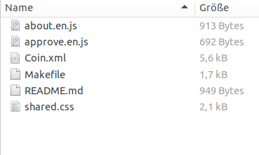

Quick Start (usuable now)
In this tutorial we guide you through the process of setting up a simple TokenScript and deploy it to AlphaWallet.
TokenScript has a lot of functionalities, but we start with an easy example: Add information to your token. We will guide you through the process of adding token-specific information to a wallet. This can be useful by itself, but it is mostly educative to understand how you create a TokenScript for your token and how a wallet like AlphaWallet uses it.
Requirements
We assume that you are familiar with Token, Ethereum and Smart Contracts. We also assume that you have launched your own Token - be it on mainnet or on a testnet like Ropsten. If you want to learn how to launch a testnet token, you can use our guide. If you have not, but want to try TokenScript, you can use the "Coin" token on Ropsten address 0xe35FE4A1B17d50A8022078d98162DB25bC860834.
TokenScript will be imported into AlphaWallet, a mobile wallet which supports several Ethereum networks. To use TokenScript, you will have to add your own token or "Coin". If you need help adding the token, read this mini guide.
Create the TokenScript files
You have your own Token or imported "Coin" in AlphaWallet. Now you want AlphaWallet to show information about this token.
To do so you will need a TokenScript file. You could create it from scratch. To do so, you should understand the basic concepts and study the source code of examples.
For this exercise we will use ABI to TokenScript, a simple tool to get the TokenScript files from the smart contract ABI. You find the ABI either in Studio or get it from Etherscan.io.
Now download the files in a folder on your computer and inspect them.

Most important is the token.xml file (here: Coin.xml). It declares the TokenScript structure. Also important are the JavaScript files. They contain the dynamic code for Action Cards which is executed in AlphaWallet. The Makefile is needed to finish the TokenScript creation. To give your an understanding of TokenScript, we will inspect these files.
The XML file
To manipulate your TokenScript, you will need a basic understanding of what it contains. Here we will only present some parts of the XML file. To learn more about the syntax, you find an overview here.
The header
The file header will look like this:
<?xml version="1.0" encoding="UTF-8"?>
<!DOCTYPE token [
<!ENTITY style SYSTEM "shared.css">
<!ENTITY about.en SYSTEM "about.en.js">
<!ENTITY approve.en SYSTEM "approve.en.js">
<!ENTITY foryou.en SYSTEM "foryou.en.js">
]>Declare contract, network and name
Every TokenScript file needs to contain some basic info about the token: On which network does it run, what is the address of its smart contract, and what is its name? This is declared with this code:
<ts:contract interface="erc20" name="Coin">
<ts:address network="3">0xe35FE4A1B17d50A8022078d98162DB25bC860834</ts:address></ts:contract>
<ts:origins>
<ts:ethereum contract="Coin"/>
</ts:origins>As you see, the Coin token is an ERC20 smart contract. The network number 3 means that it is on Ropsten testnet. If you change this address, you can direct the TokenScript to another token.
Action Cards
<ts:cards> tags. In this example an Action Card is
added which provides information about the
token: <ts:card type="action">
<ts:label>
<ts:string xml:lang="en">About this token</ts:string>
</ts:label>
<ts:view xmlns="http://www.w3.org/1999/xhtml" xml:lang="en">
<style type="text/css">&style;</style>
<script type="text/javascript">&about.en;</script>
</ts:view>
</ts:card>The JavaScript file
Before we start to create your own Action Card, you should have a loot to the JavaScript file about.en.js. It contains instructions for the wallet how to unterstand the about Action Card.
render() {
return`
<div class="ui container">
<div class="ui segment">
<img src="https://www.bitcoin-buch.org/bitcoin-geschichte-front-1.jpg" />
<span><bold><h1>This is the Token of Christoph!</h1></bold><br /><br />It is a one of the century chance to invest!</span>
</div>
</div>
`;
}This function renders the display after the user tapped the "about the token" button. Inside you find some basic HTML: A div of the class "ui container", and in it a div of the class "ui segment". Inside this div there is a picture, a headline and a text.
Add your personal note to your token
Now that you know some basics about the TokenScript architecture, it is easy to add your own Action Card with your personal information:
- Create a file called hello.en.js.
- Copy the content of about.en.js in this file.
- Change the part inside the rendered div to display your personal message and save it.
- Open the xml file.
- Declare your JavaScript file in the header.
- Copy the Action Card for "about" and paste it into the Card section.
- Modify the content that it loads the hello.en.js file.
Canonicalize your TokenScript
If you followed the latest instructions, you basically created your own Action Card. Now we just need to canonicalize the file it so that we can import it in AlphaWallet.
Thanks to Makefile the canonicalization is easy: Type "make token.canonicalized.xml" in the console while being in the folder with the TokenScript files, with "token" as the name of your token. If your system has all dependencies, you will get a file named "token.canonicalized.xml.TEST". Rename the file into token.canonicalized.xml.
If the make commaned doesn't work, you might lack some software. You can use xmllint, which is available for both Ubuntu and Windows. Here you find the commands how to install it.
Put the TokenScript on your Smartphone
Finally you need to connect your smartphone to your computer. Open the filesystem and navigate to the AlphaWallet folder. Then paste the token.canonicalized.xml in the AlphaWallet folder.
For iOS you should exchange the file somehow, maybe with twitter, facebook or telegram, and than open it with AlphaWallet.
Now start AlphaWallet and select your token. Click the […] button in the right buttom, select "hello" and look at the information you added. This is your first TokenScript.
Whenever you want to change the information or add another Action Card, you can simply repeat the former steps.
Beyond information
Adding a bit of information to a token in a wallet might sound trivial. But it's no small deal. Common wallets don't know anything about a token, and if they do, then it is because the wallet developers selected a coin to add information. With AlphaWallet and TokenScript you can add information to any Token.
It doesn't require much fantasy to imagine how this simple Action Card can become the base for apps. With JavaScript you are not restricted to show information. You can do everything JavaScript can do, and you can connect to an API to get information. If you know how to sign a message with a key inside TokenScript, you can even design your API so that it only sends information to a wallet holding a required amount of your tokens. You can bind any subscription based app to a token and launch it in AlphaWallet.